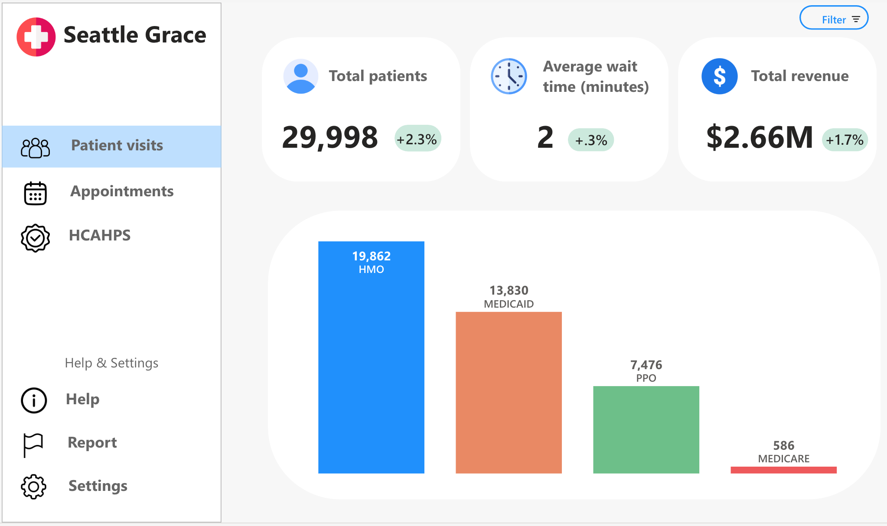

A clinical operations team was looking for a quick KPI report to capture patient visit counts, average wait times, and revenue. They wanted daily changes and a breakdown of all data by insurance.
(Note: the report shown uses dummy data that makes some of the percentages odd.)

An operations team needed a more consistent way to track
licensing costs for technical resources (Microsoft enterprise licenses, Adobe, etc.).
They had several csv files listing users, the resources, and the costs. Their requirements were
to consolidate the spending reports, balance them against the allocated budgets
for each of the teams, and see when overspending was occurring.
Because report users had Power BI Pro licenses, this report was able
to be developed with Power BI and used as a functional report (as opposed to static).
See more